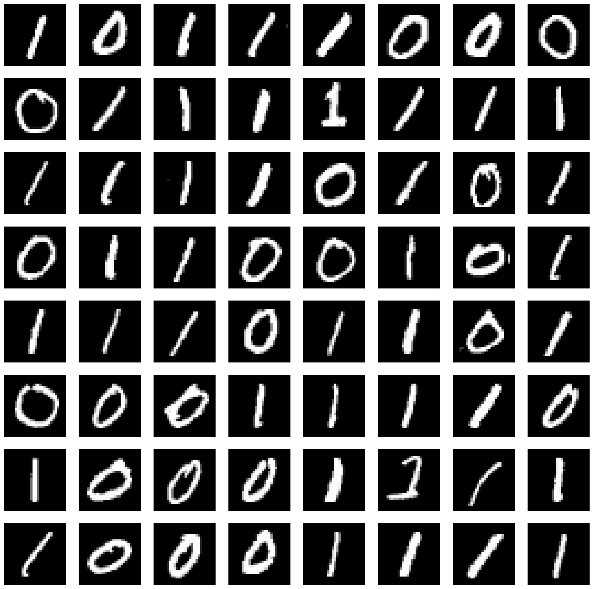
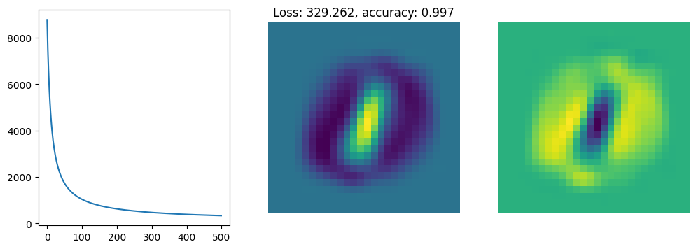

from demo import *
images, labels = get_dataset('ones_and_zeros')
xw = linear_function(X, w)
py = sigmoid((2 * y - 1) * xw)
grad = ((1 - py) * (2 * y - 1)).reshape((-1, 1)) * X
grad.shape(12665, 784)import time
from IPython import display
def nll_and_grad(w, X, y):
return nll(w, X, y), gradient(w, X, y)
def gradient_descent(value_and_grad, w0, lr, steps, X, y):
f, ax = plt.subplots(1, 3, figsize=(12,4))
losses = []
weights = w0
for i in range(steps):
loss, g = value_and_grad(weights, X, y)
weights = weights - lr * g
losses.append(loss)
# Plotting code
[a.cla() for a in ax]
display.clear_output(wait =True)
ax[1].axis('off')
ax[2].axis('off')
ax[0].plot(losses)
ax[1].imshow(weights[:-1].reshape(images[0].shape))
ax[2].imshow(g[:-1].reshape(images[0].shape))
ax[1].set_title('Loss: %.3f, accuracy: %.3f' % (loss, accuracy(X, y, weights)))
display.display(f)
time.sleep(0.001)
return weights, losses
w = np.zeros(X.shape[1] + 1)
weights, losses = gradient_descent(nll_and_grad, np.zeros_like(w), 0.0000003, 500, X, y)